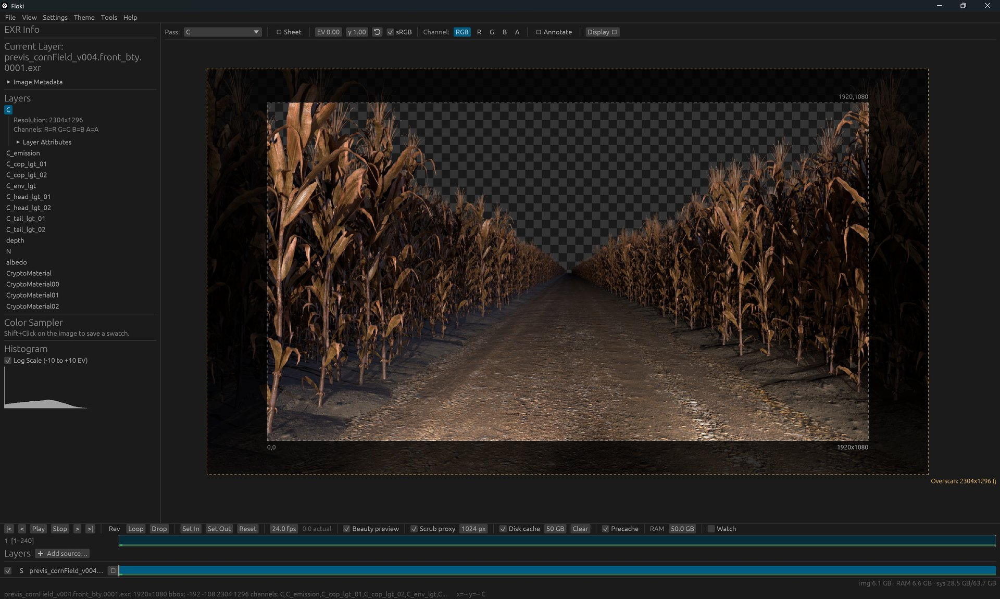

Floki
Rust, wgpu, egui, OpenEXR
A GPU-accelerated viewer for multi-layer OpenEXR files, made for technical directors, compositors, and lookdev artists. Inspect passes and channels, read floating-point histograms, stack renders to pixel-diff them, and play image sequences in real time.
Planned as the 2D and color engine for BIF.